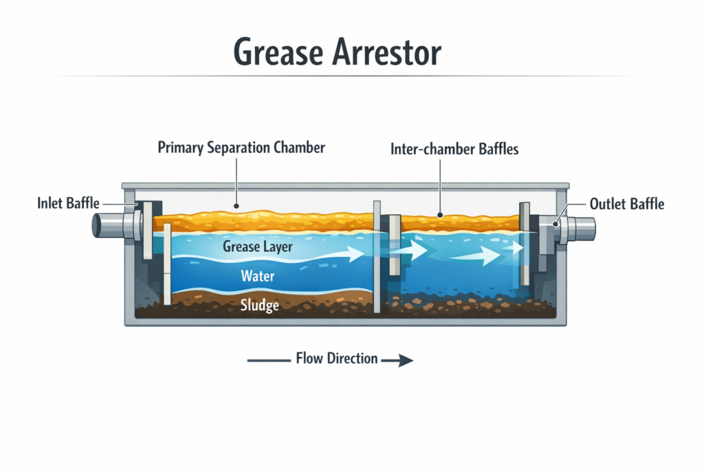
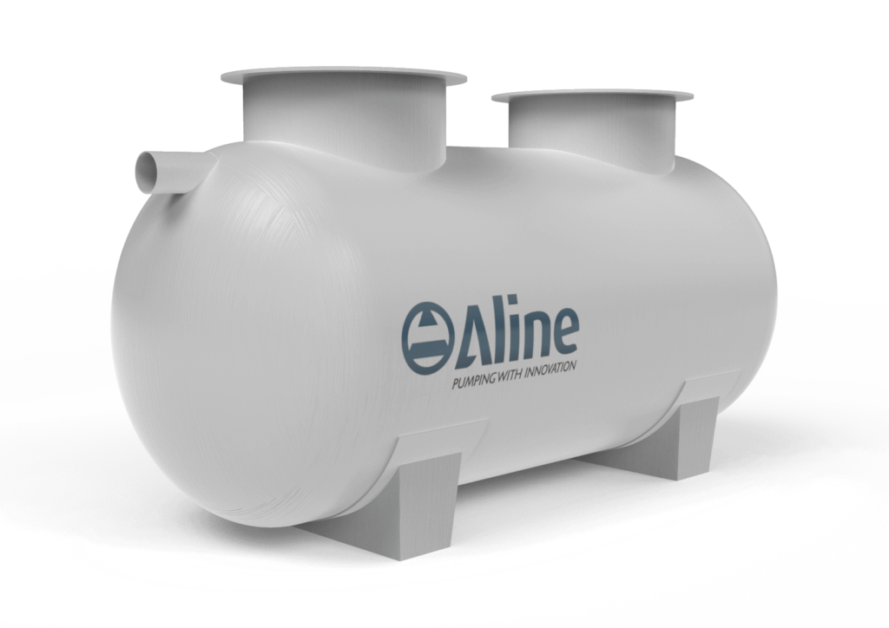

wp:paragraph {"style":{"typography":{"fontSize":"15px","fontStyle":"normal","fontWeight":"600"},"layout":{"selfStretch":"fit","flexSize":null}}}
Published by:
/wp:paragraph wp:post-author-name {"isLink":true} / wp:paragraph {"style":{"typography":{"fontSize":"15px","fontStyle":"normal","fontWeight":"600"}}}on
/wp:paragraph wp:post-date {"metadata":{"bindings":{"datetime":{"source":"core/post-data","args":{"field":"date"}}}}} / /wp:group wp:spacer {"height":"50px"} /wp:spacer wp:paragraphCommercial kitchens and food processing facilities deal with a problem most people never see. Every day, hot wastewater carrying fats, oils, grease, and food solids flows toward the drainage system. Once those materials cool, they can solidify inside pipework, restrict flow, and create major blockages that are expensive to clear and disruptive to operations.
/wp:paragraph wp:paragraphThis is why a grease arrestor is such an important part of commercial wastewater infrastructure. A properly specified grease arrestor helps separate floating grease from water before it reaches the sewer. That protects internal plumbing, supports compliance with local authority requirements, and reduces the risk of environmental incidents caused by overflows or blockages.
/wp:paragraph wp:headingHow a Grease Arrestor Works in Practice
/wp:heading wp:paragraphAt its core, a grease arrestor uses time, gravity, and controlled flow. Fats, oils, and grease are lighter than water, so they rise to the surface when the wastewater slows down. Food solids and heavier particles settle lower in the tank. The clearer water in the middle then continues through the system and out to the sewer.
/wp:paragraph wp:paragraphFor that separation to happen properly, the wastewater cannot rush straight through the tank. A grease arrestor, often configured as a triple interceptor (multi-chamber system), uses internal baffles and chambers to slow flow and improve separation. As the warm wastewater slows, it allows grease to separate and rise to the surface due to density differences, with cooling further assisting this process. The separated grease may then congeal and accumulate at the top of the chamber instead of moving downstream into the sewer network. This helps prevent short-circuiting and scum carryover while allowing clearer water to discharge.
/wp:paragraph wp:paragraphEffective grease arrestor performance is governed by hydraulic retention time (HRT), which ensures wastewater remains in the tank long enough for separation to occur. Factors such as flow rate, temperature, and the use of detergents can significantly influence performance, which is why correct sizing and regular maintenance are critical. If the unit is too small, water can move through too quickly and carry grease out with it. If it is correctly sized and maintained, the separation process is predictable and reliable.
/wp:paragraph wp:heading {"level":3}Real-World Application: A High-Volume Fast Food Kitchen
/wp:heading wp:paragraphConsider a busy fast-food restaurant serving hundreds of fried meals each day. During peak periods, staff wash utensils, cookware, and preparation areas, and greasy wastewater from sinks flows continuously into the drainage line. Without a grease arrestor, that wastewater would enter the sewer carrying hot oil, animal fat, and suspended food particles.
/wp:paragraph wp:paragraphAs the waste cools underground, grease begins to solidify along the inside walls of the pipework. Over time, that build-up traps more debris, narrows the pipe, and increases the risk of backups into the kitchen. A correctly sized grease arrestor shifts that separation process to a controlled point on site, where grease and solids can be contained and removed during scheduled servicing.
/wp:paragraph wp:headingWhat a Grease Arrestor Does Not Do
/wp:heading wp:paragraphOne of the most common misunderstandings is that a grease arrestor treats or destroys waste. It does not. A grease arrestor is a passive separation device. Its role is to detain wastewater long enough for grease to float and solids to settle.
/wp:paragraph wp:paragraphThat means the captured waste still needs to be removed. Over time, grease accumulates at the top of the tank and sludge collects at the bottom. If routine pump-out and cleaning are ignored, the effective working volume of the grease arrestor shrinks. As the available volume drops, wastewater moves through the tank faster and separation performance declines.
/wp:paragraph wp:paragraphIt is also important not to confuse a standard grease arrestor with an automated grease removal unit. Mechanical systems may actively skim grease from the surface, but a conventional grease arrestor relies on passive physical separation. In most cases, its effectiveness comes down to sound hydraulic design, correct sizing, and disciplined maintenance.
/wp:paragraph wp:headingKey Component Analysis
/wp:heading wp:paragraphEach internal component of a grease arrestor has a specific job. Together, these elements slow the incoming flow, create stable separation zones, and help prevent grease from passing into the discharge line.
/wp:paragraph wp:image {"id":6528,"sizeSlug":"large","linkDestination":"none"}
The infographic above shows where each key component typically sits within a grease arrestor and how wastewater moves through the unit from inlet to outlet.
/wp:paragraph wp:table| Component | Engineering Function | Maintenance Consideration |
| Inlet Baffle | Slows the incoming wastewater and reduces turbulence as flow enters the grease arrestor. | Must stay clear so wastewater enters the chamber evenly and does not create unnecessary disturbance. |
| Primary Separation Chamber | Provides the main retention volume where grease rises and solids begin to settle. | Usually requires the closest monitoring because sludge accumulation reduces usable capacity. |
| Inter-chamber Baffles | Guides partially clarified water beneath the floating grease layer and into the next chamber. | Must remain structurally sound to prevent short-circuiting and loss of separation efficiency. |
| Outlet Baffle | Helps retain residual grease inside the grease arrestor while allowing clearer water to discharge. | Should be inspected during servicing to ensure the outlet path remains unobstructed and compliant. |
Better Performance Starts With the Right Grease Arrestor
/wp:heading wp:columnswp:column
wp:image {"id":4351,"sizeSlug":"large","linkDestination":"none"}

wp:paragraph
Grease Arrestors
/wp:paragraph wp:paragraphAline Grease Arrestors are a proven and certified range of grease traps. They are suitable for above-ground and below-ground installations and are designed to remove fats, oils, grease and suspended solids.
/wp:paragraph wp:paragraphIdeal for cafés, restaurants, canteens, hospitals, bars and hotels, the range includes sizes from 1000L to 5000L, with further custom fibreglass sizes available.
/wp:paragraph wp:buttonswp:button {"backgroundColor":"luminous-vivid-orange","textColor":"white","style":{"border":{"radius":{"topLeft":"0px","topRight":"0px","bottomLeft":"0px","bottomRight":"0px"}},"elements":{"link":{"color":{"text":"var:preset|color|white"}}}}}
/wp:button /wp:buttons /wp:column /wp:columns wp:paragraphWhen a commercial kitchen depends on reliable wastewater control, a grease arrestor needs to do more than exist on the plans. It needs to be correctly sized, correctly installed, and routinely maintained so it can keep protecting the drainage system under daily load.
/wp:paragraph wp:paragraphIf you are upgrading a commercial kitchen or planning wastewater infrastructure for a new facility, speak with the technical team at Aline Pumps about grease arrestor sizing, compliance requirements, and the right solution for your site.
/wp:paragraph wp:shortcode [harland_mackenzie_author_card] /wp:shortcode wp:paragraph /wp:paragraph